ruvnet · ruqu · quantum execution engine
A quantum computer
on your normal laptop.
ruqu is a tiny, fast program that acts exactly like a
real quantum machine — so you can build and test quantum ideas before the
expensive hardware exists, right in your browser or your terminal. Written in pure
Rust, it runs as npx @ruvector/ruqu or drops straight into a web page.
No Python. No install.
In one sentence: ruqu is a pretend quantum computer that runs on your normal laptop — a faithful imitation of a real quantum machine, so you can learn, prototype, and check your quantum ideas today, for free, without owning (or renting) million-dollar hardware.
01
“Oh — that’s what it’s for.”
Start here — one concrete, relatable example before anything else
Meet Aisha. She teaches an undergrad “intro to quantum computing” class and is not a quantum physicist herself. She uses Claude Code to prepare her demos. Today she wants to show the famous Bell state: two qubits that become “spookily” linked, so measuring one instantly tells you the other.
First, what’s a “qubit”? A normal bit is either 0 or 1. A qubit (a quantum bit) can be a blend of both at once — until you look. That blend is what gives quantum its power, and what makes it so fragile:
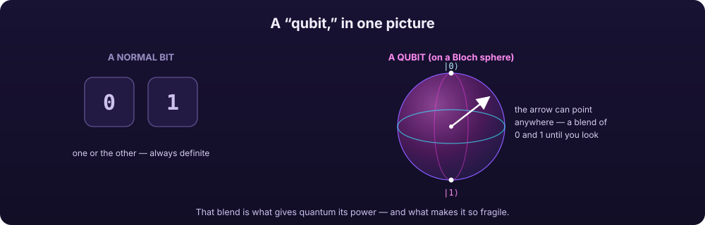
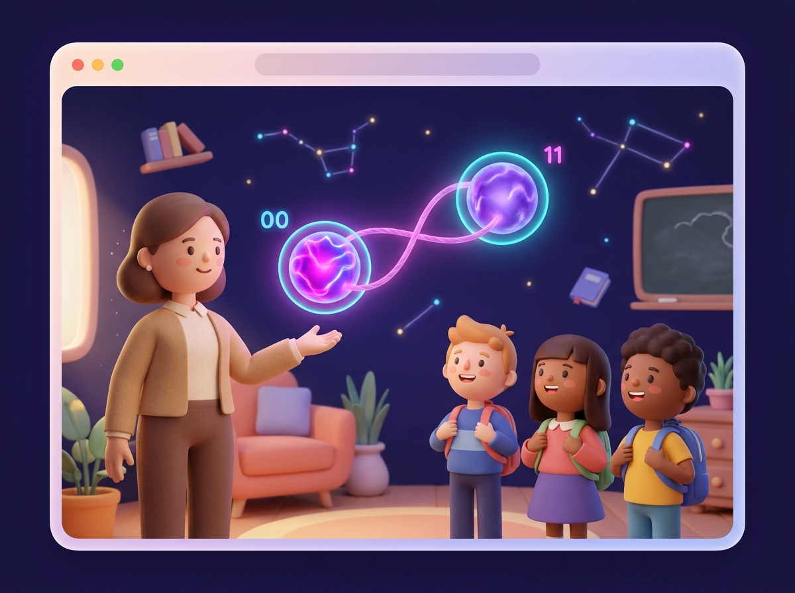
Before ruqu: to demo a Bell state live, Aisha would normally have to install a heavy Python quantum toolkit, fight dependency errors on the classroom laptops, or sign her class up for cloud quantum credits that run out. Half the lab period is gone before anything quantum happens — and nothing runs in the students’ own browsers.
After ruqu: she types one command — no install — and a real
state-vector simulation runs, printing the outcome (roughly 50% “00” and 50%
“11”, the Bell-state signature). For the web lab she drops the
@ruvector/ruqu-wasm package into a page; in about ten lines, every student
watches the same circuit run in their own browser tab. The
whole class is doing quantum in the first five minutes.
# In a terminal — nothing to install:
npx @ruvector/ruqu simulate --qubits 2
# → prints ~50% "00" and ~50% "11" (the Bell signature)
# In a web page — every student runs it themselves:
const circuit = new Circuit(2);
circuit.h(0); // put qubit 0 into a 50/50 blend
circuit.cnot(0, 1); // link (entangle) the two qubits
sim.run(circuit); state.measureAll(); // → "00" or "11"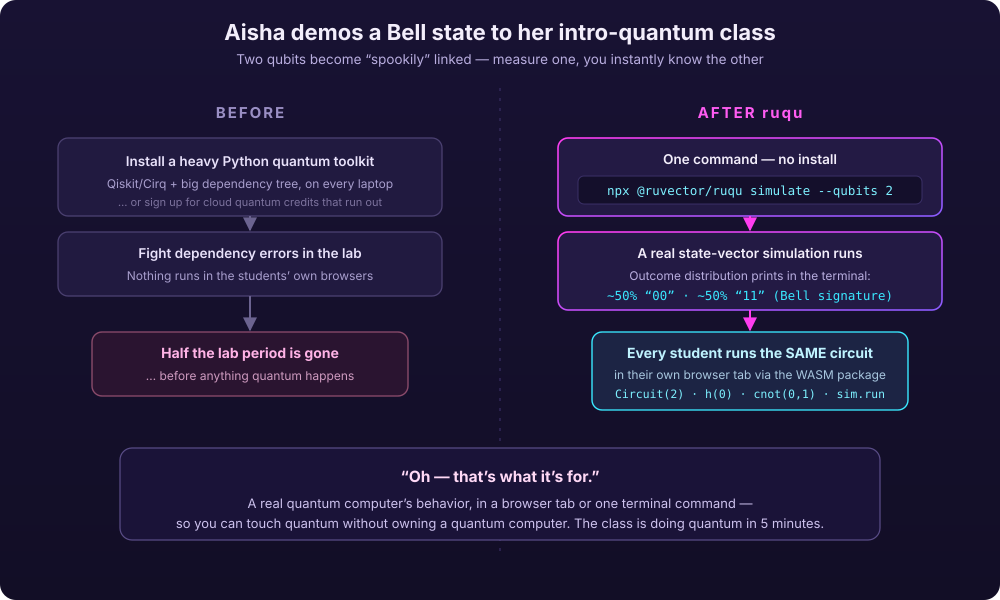
02
What ruqu actually is
Past the “quantum execution intelligence engine” pitch — in plain terms
The repo’s own headline calls ruqu “a quantum execution intelligence engine … a layered operating stack that decides how, where, and whether to run quantum workloads.” True — but it means nothing to a normal person. Here’s the down-to-earth version:
- A “quantum computer” is a radically different kind of computer that, for certain problems (designing a drug molecule, finding the best route, cracking a search), can try a huge number of possibilities at once. The catch: real ones are rare, cost millions, live in fridges colder than space, and make mistakes constantly.
- The problem: almost nobody can get hands-on time on one. So how do you learn quantum, prototype an idea, or check your math? You simulate — run a faithful imitation on an ordinary computer.
- ruqu is that faithful imitation, written from scratch in
Rust (a fast, safe language) with “no Python, no C++, no
heavyweight dependencies.” Because it’s also compiled to
WebAssembly, the same simulator runs in three places with zero
install: in a web page, from your terminal with one
npxcommand, or inside a Rust program.
It gives you three things:
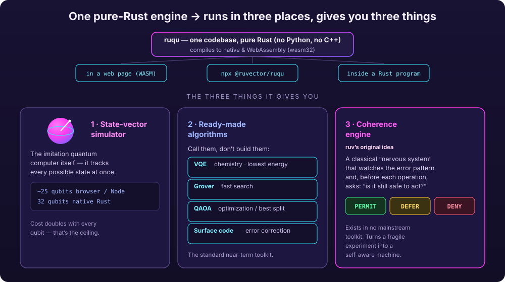
- A state-vector simulator — the imitation quantum computer itself (up to ~25 qubits in a browser/terminal, up to 32 in native Rust).
- Ready-made quantum algorithms you can just call — VQE (chemistry / find a molecule’s lowest energy), Grover (fast search), QAOA (optimization), and surface-code error correction.
- A novel “coherence engine” — a classical nervous system that watches a quantum machine’s error pattern in real time and says PERMIT / DEFER / DENY before each operation: “is it still safe to act, or is this thing about to fall apart?”
03
Why this matters — and why now
The stakes: what it does, why you care, why you need it
What does it actually do? It pretends to be a quantum computer on your normal machine, accurately — so you can run quantum programs, test quantum algorithms, and study quantum error correction without owning (or renting) real quantum hardware.
Why do you care? Because real quantum machines are scarce, costly, and noisy. A faithful free simulator lets you learn, prototype, and validate today — and catch your bugs before you burn money on actual hardware time.
Why do you need it? The popular alternatives are heavy Python stacks (Qiskit, Cirq) that pull in big dependency trees and don’t run cleanly in a browser or as a one-line terminal command. ruqu is pure Rust → WebAssembly: tiny, fast, embeddable, and runnable with no Python install and no setup.
Why is it important? It also ships ruv’s original idea — the coherence engine — a real-time “is it safe to act?” monitor that turns a quantum computer “from a fragile experiment into a self-aware machine,” the missing piece for running long, trustworthy quantum jobs.
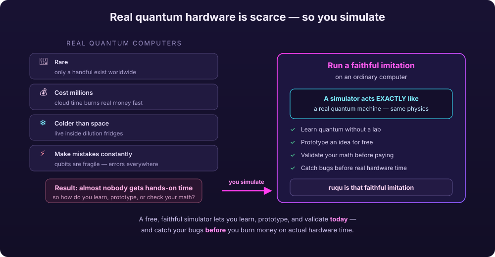
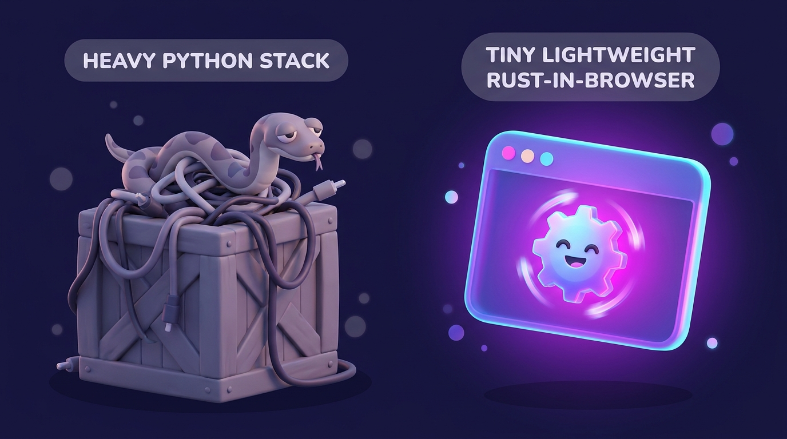
04
How it works
From the gates you write to a measured outcome — the real pipeline
You describe a circuit as qubits and gates. ruqu builds a state vector — one number (an “amplitude”) for every possible outcome, so it tracks every state at once. Each gate is applied as a matrix operation (pure linear algebra, exact). Then you measure, which collapses that vector into one real bitstring with the right probabilities. A SHA-256 witness log records each step, so the run is reproducible — not hallucinated.
This is also where the 25/32-qubit ceiling comes from: every qubit you add doubles the size of the state vector. Two qubits need 4 amplitudes; ten need 1,024; twenty-five need over 33 million. That doubling is the real, honest limit.
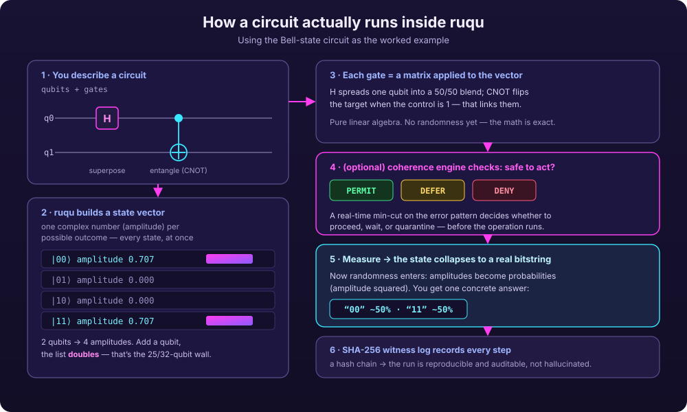
05
What a “solved” state looks like
From “I’ve read about this” to “I just ran it”
When ruqu is working for you, quantum stops being theoretical. A terminal prints a real Bell-state distribution. Every student’s browser runs the same circuit. A Rust program hands you a molecule’s ground-state energy. And a health gauge flags trouble a median of four cycles before failure. Quantum ideas you could only read about become things you run.
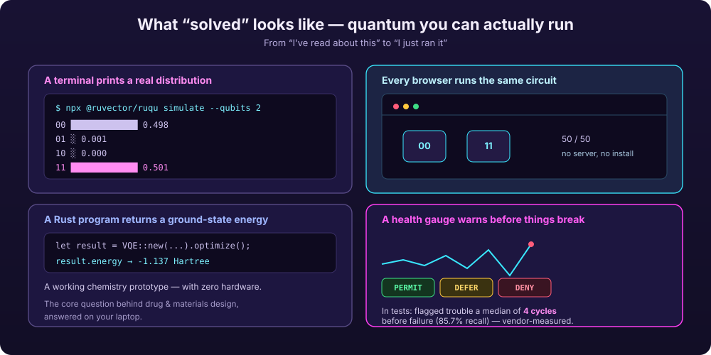
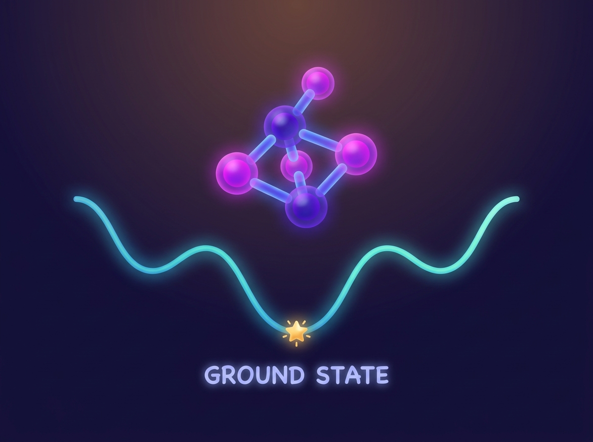
06
How you’d implement it
Three doors into the same engine — pick the one that fits your job
There’s no “setup” ceremony. Pick the surface that fits what you’re doing — all three drive the same pure-Rust state-vector engine.
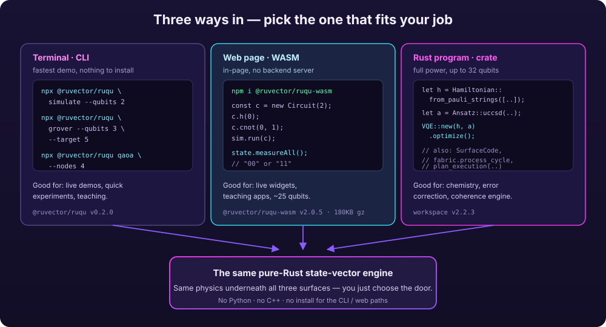
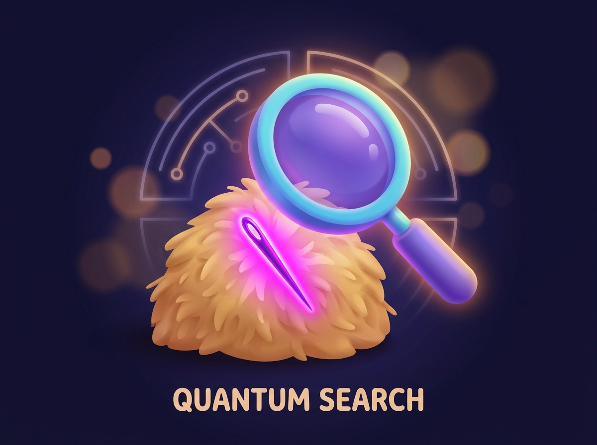
grover) finds the needle — you don’t build the algorithm, you call it.# Terminal — fastest, nothing installed:
npx @ruvector/ruqu grover --qubits 3 --target 5
# Web page — an in-browser widget, no server:
npm i @ruvector/ruqu-wasm
const c = new Circuit(3); /* … */ sim.run(c); state.measureAll();
# Rust — full power (chemistry, error correction, coherence):
let h = Hamiltonian::from_pauli_strings([/* … */]);
let result = VQE::new(h, Ansatz::uccsd(/* … */)).optimize();
07
How to start — in 60 seconds
No install. One command. You’re doing quantum in the first minute.
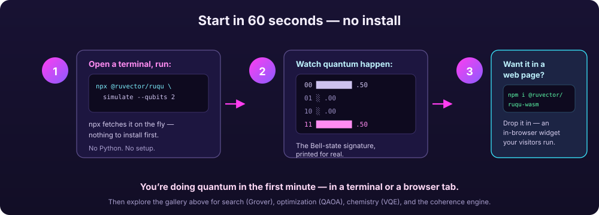
Run one command
Open a terminal: npx @ruvector/ruqu simulate --qubits 2. npx fetches it on the fly — nothing to install first.
Watch quantum happen
It prints the Bell-state distribution — roughly 50% “00” and 50% “11”. That’s a real simulation, for real.
Put it in a page
Want it in a website or teaching app? npm i @ruvector/ruqu-wasm and drop in an in-browser widget your visitors run.
From here, explore the use-case gallery below — search (Grover), optimization (QAOA), chemistry (VQE), error correction, and the coherence engine — each with its own command and its own picture.
08
Use-case gallery
Seven real things you can do — each opens to its own visual, concept, and command
Each card is a full scenario: the situation, the exact command, what it does, and what you get — with its own diagram. Open any of them.
1 Quantum search in the terminal CLI · Grover
- Situation
- You want to show how a quantum computer finds a “needle in a haystack” faster than checking items one by one.
- Command
npx @ruvector/ruqu grover --qubits 3 --target 5- What it does
- Runs Grover’s algorithm (amplitude amplification) on the WASM state-vector simulator to home in on the target in about √N steps instead of N.
- What you get
- The found bitstring and the probability it landed on the right answer — Grover’s quadratic speedup, made visible.
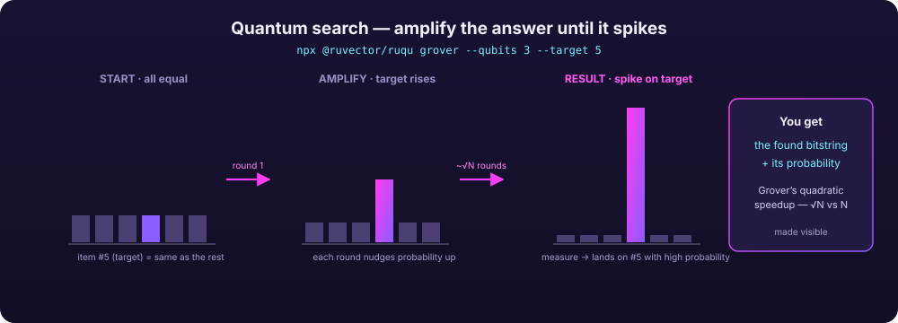
2 Optimization toy problem (MaxCut), no math PhD CLI · QAOA
- Situation
- You have a network and want the best way to split it into two groups — a classic NP-hard problem.
- Command
npx @ruvector/ruqu qaoa --nodes 4- What it does
- Runs QAOA (a quantum approximate optimizer) on a 4-node ring to find a good split.
- What you get
- A partition and its cut value — a hands-on feel for “quantum approximate advantage” on combinatorial problems.
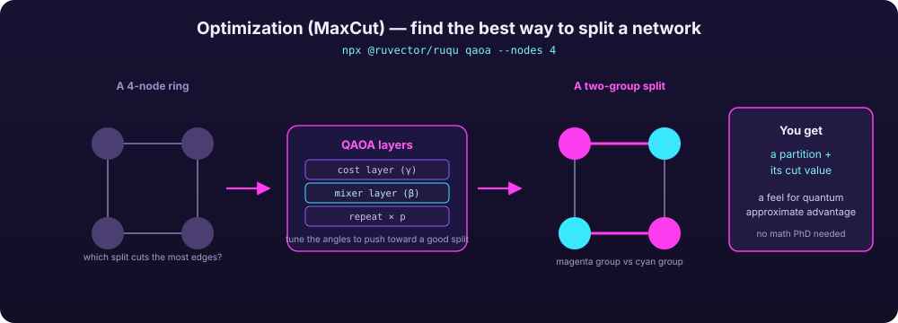
3 A quantum chemistry prototype in Rust Rust · VQE
- Situation
- You want a molecule’s lowest-energy (“ground”) state — the core question behind drug and materials design — but have no quantum hardware.
- Command (Rust)
- Build a
Hamiltonian::from_pauli_strings([…]), pick theAnsatz::uccsd(…), thenVQE::new(…).optimize(). - What it does
- Runs the Variational Quantum Eigensolver, the standard near-term quantum-chemistry algorithm, entirely on the simulator.
- What you get
- An estimated ground-state energy in Hartrees (
result.energy) — a working chemistry prototype with zero hardware.
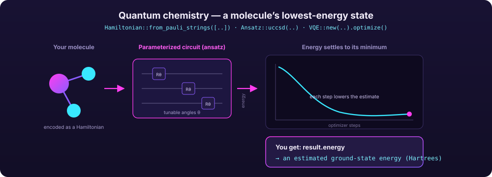
4 How quantum survives its own mistakes Rust · error correction
- Situation
- You’re learning why quantum machines need error correction and how a “surface code” fixes errors.
- Command (Rust)
SurfaceCode::new(distance: 3), inject noise withapply_noise(…, error_rate: 0.01), thenDecoder::mwpm().correct(…).- What it does
- Encodes a logical qubit, scatters realistic errors, measures the tell-tale “syndromes,” and corrects them with minimum-weight perfect matching.
- What you get
- A before/after you can inspect — corrupted state → detected syndromes → recovered state.
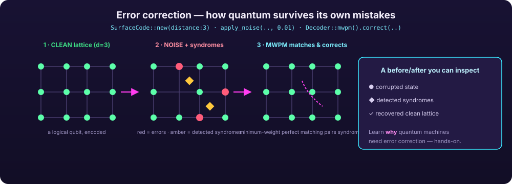
5 A real-time “is it safe to act?” health monitor Rust · coherence engine
- Situation
- You’re running a long quantum job and want to catch a structural breakdown before it wipes out your progress.
- Command (Rust)
- Feed each cycle’s
syndrome_dataintofabric.process_cycle(…); read backPermit/Defer/Deny. - What it does
- ruv’s original coherence engine runs a real-time min-cut on the error pattern and decides whether the machine is healthy, borderline, or collapsing.
- What you get
- An early-warning signal — in tests it flagged trouble a median of 4 cycles before failure with 85.7% recall — so healthy regions keep running while a bad region is quarantined.
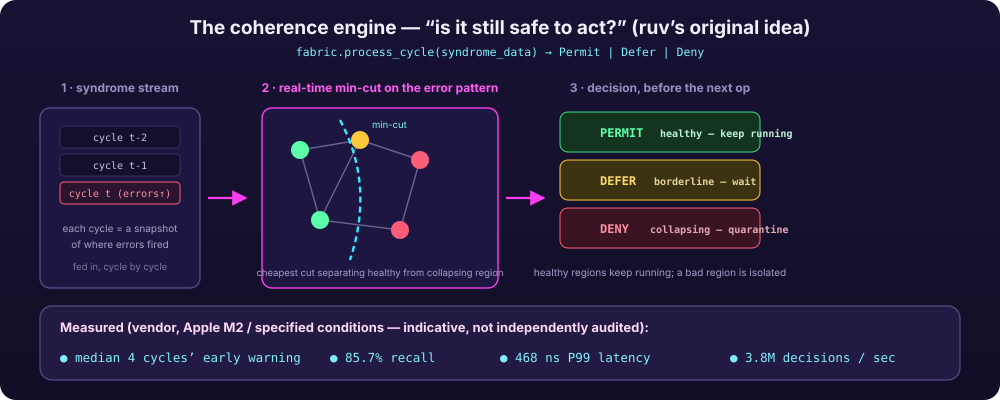
6 Pick the right engine automatically for a bigger circuit Rust · planner
- Situation
- Your circuit is too big for the obvious “track every possibility” method, but you don’t know which technique to use.
- Command (Rust)
plan_execution(&circuit, &PlannerConfig::default())— ordecompose(&circ, 25)to split it.- What it does
- A cost-model planner predicts memory/runtime/fidelity and routes the circuit to the best of five backends (StateVector, Stabilizer for Clifford-only circuits with millions of qubits, TensorNetwork, Clifford+T, or hardware profiles).
- What you get
- A feasible run where a naive simulator would have run out of memory.
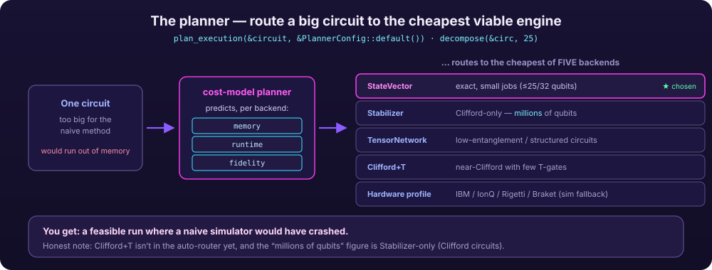
7 In-page quantum for a website or teaching app JS · WASM widget
- Situation
- You want a live quantum demo embedded in a web page with no backend server.
- Command (JS)
npm install @ruvector/ruqu-wasm, thennew Circuit(3)…sim.run(circuit)…state.measureAll().- What it does
- Runs genuine state-vector simulation client-side via WebAssembly (up to ~25 qubits; ~1 GB browser memory at 25).
- What you get
- An interactive quantum widget your visitors run themselves, zero server cost.
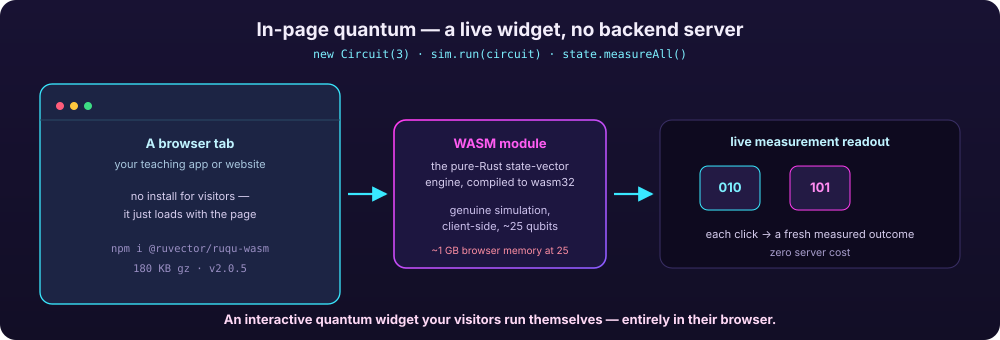
⚛
“I already have X — why ruqu too?”
Qiskit/Cirq? Claude Code? Another simulator? Here’s the honest difference.
- vs Python quantum stacks (Qiskit / Cirq): powerful but heavy — a
Python runtime plus a large dependency tree, awkward to embed and impossible to drop
straight into a browser. ruqu is pure Rust with no FFI that compiles to
native and
wasm32: a 180 KB-gzip WASM bundle that runs in a web page or asnpx @ruvector/ruqu. Same physics, far less weight, runs where Python can’t. - vs “just use Claude Code”: Claude Code is a brilliant generalist, but it can’t run a quantum circuit or check whether your VQE energy is right — it would guess. ruqu is the actual engine it can call: real state-vector math, real algorithms, and a cryptographic witness log (SHA-256 hash chain) so results are reproducible and auditable, not hallucinated. The repo even ships ruqu as a Claude-Code agent harness so your assistant can drive it directly.
- vs other simulators generally: the differentiator is the coherence engine — “ruQu is not a simulator… it decides how, where, and whether to run quantum workloads.” The real-time PERMIT/DEFER/DENY safety gate (468 ns P99, 3.8M decisions/sec — measured) is ruv’s original contribution and exists in no mainstream toolkit.
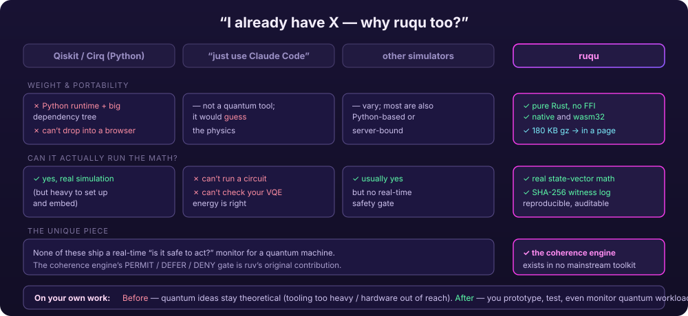
09
The drop-in kit
One download, two halves — one for you, one for your AI assistant
Want your AI assistant (in Claude Code or Cursor) to answer questions about ruqu from the real source instead of guessing? Grab the drop-in kit. It’s one folder with two clearly-labeled halves: a plain-English primer for you, and a queryable knowledge base for your AI.
![An annotated file tree of the ruqu-kb download. Root: ruqu-kb, unzip into your project as kb. for-humans half: ruqu-primer.md (the whole tool in plain English) and an optional studio folder (video and audio overview). for-ai half: ruqu-kb.big.rvf (the sharp brain, 768-dim), ruqu-kb.small.rvf (the light brain, 384-dim), ruqu.passages.jsonl (every doc and all source, searchable), ask-kb.mjs (ask it from the command line), kb-mcp-server.mjs (wire it into Claude Code or Cursor). Plus a README and manifest with the build's provenance.](assets/diagrams/dropin.svg)
Unzip into your project
Drop the folder in as kb/. You now have for-humans/ and for-ai/ side by side.
Add the 2-line .mcp.json
Point the bundled kb-mcp-server.mjs at the .rvf brain so your assistant can query it.
Paste the CLAUDE.md gate
Tell your AI to answer ruqu questions from the KB. Confirm it works with a real query — e.g. “How does the coherence engine decide PERMIT vs DENY?”
.rvf bundle isn’t attached yet, the file tree above is the exact
contract it ships to — both 768-dim and 384-dim brains, the passages, the CLI, and the
MCP server.
⚠
Honest limits
What ruqu does not do, stated plainly
- It is a simulator, not a quantum computer. Validation is simulation-only; “hardware behavior may differ.” The hardware adapters (IBM/IonQ/Rigetti/Braket) are profiles with local-simulation fallback, not a finished end-to-end pipeline (roadmap v0.5, “Planned”).
- Qubit ceilings are real. Exact state-vector simulation tops out around 25 qubits in browser/Node (≈1 GB memory at 25) and 32 in native Rust — cost doubles with every qubit. The Stabilizer backend reaches “millions” of qubits only for restricted (Clifford-only) circuits.
- Versions are early / mixed. The coherence engine is at roadmap
v0.3–0.4 (“v1.0 production-ready with hardware validation” still Planned);
the CLI is
@ruvector/ruquv0.2.0;@ruvector/ruqu-wasmis v2.0.5; the Rust workspace is v2.2.3 — read the version that matches what you install. - Some pieces aren’t wired together yet. The repo openly lists gaps: “no end-to-end pipeline” (modules run independently), Clifford+T not yet in the auto-router, greedy (not optimal) min-cut partitioning, and no fidelity-aware stitching at partition boundaries.
ruqu-exoticis explicitly experimental. Its quantum-inspired AI hybrids (memory decay, interference search, reasoning error correction) are research, not production guarantees.- The benchmark numbers are vendor-measured (Apple M2 / specified conditions), not independently audited — treat them as indicative.